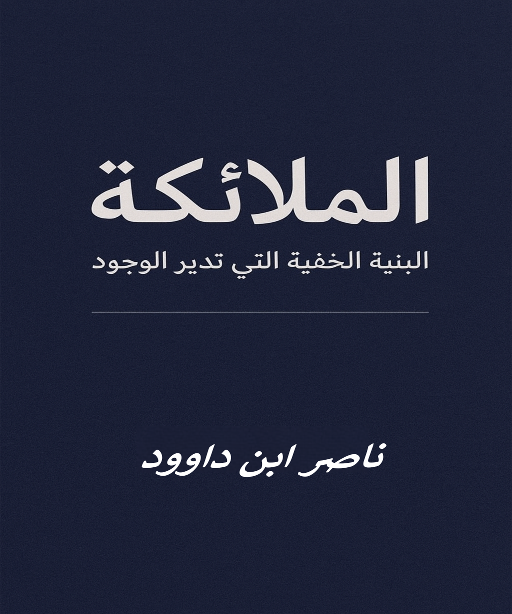

📥 روابط التحميل المباشر
📄 DOCX 📖 PDF (مباشر) 📖 PDF (خارجي) 🌐 HTML 📝 نص خام (خارجي) 📝 نص خام (مباشر) 🌐 Archive.orgوصف الكتاب
مقدمة الكتاب: "الملائكة: البنية الخفية التي تُدير الوجود"
هذا الكتاب ليس إعادة سردٍ لمروياتٍ قديمة، ولا محاولةً لشرح الغيب بلغةٍ خرافية... إنه اقتراب جديد بالكامل من مفهومٍ ظلّ لقرونٍ محاطًا بالغموض: الملائكة.
في هذه الصفحات، ينتقل القارئ من الصورة التقليدية — الملَك ككائنٍ نورانيٍّ مُجنَّح — إلى رؤية أعمق وأشمل: الملائكة بوصفهم السنن، والقوانين، والعمليات التي تُدير الكون، والنفس، والتاريخ.
النقاط الرئيسية:
- القرآن كتاب سنن لا خرافة
- العلم امتداد للمعنى لا نقيض له
- الإنسان مشروع ملائكي يعيش بين عالم الأمر وعالم الخلق
- الوعي البشري قابل للارتقاء إلى مستوى النظام الملائكي
جدول تمهيدي للنظرية الكبرى
| المفهوم القرآني | الترجمة العلمية / الفلسفية | الدلالة في النظرية الكبرى |
|---|---|---|
| الملائكة | قوانين فيزيائية (الجاذبية، الكهرومغناطيسية…) | تنفيذ الأمر الإلهي دون عصيان |
| الأسماء | شفرات مصدرية (Source Code) | مفاتيح التسخير والأخلاق |
| الروح | نظام تشغيلي (Operating System) | جسر الوعي بين الخلق والأمر |
أبرز مميزات الكتاب:
- قراءة تكاملية تجمع بين اللغة القرآنية والعلوم الحديثة
- إعادة بناء مفهوم الملائكة ضمن النظرية الكبرى
- ربط بين عالم الأمر الإلهي وعالم الخلق المادي
- تطوير مفهوم السنن الكونية والنفسية
- تقديم رؤية جديدة لتجديد الخطاب الديني
المحاور الرئيسية:
- الأزمة المعرفية: نقد التصورات الخرافية للملائكة
- المنعطف التفسيري: الملائكة كقوى تنفيذية للأمر الإلهي
- النظرية الكبرى: تكامل الوحي مع العلوم
- التطبيقات العملية: من التنظير إلى التطبيق في الحياة
- الرؤية المستقبلية: مستقبل الفهم السنني للقرآن
فهرس المحتويات
أهم فصول الكتاب:
- الفصل 1: من الأسطورة إلى القانون - رحلة الفهم الجديد
- الفصل 2: جبريل: قانون نقل المعلومة الكبرى
- الفصل 3: ميكائيل: قانون الرزق الحيوي وإدارة الطاقة الكونية
- الفصل 4: إسرافيل: قانون الانتروبيا الكبرى وانهيار الأبعاد
- الفصل 5: ملك الموت: قانون التجريد والانتقال المعلوماتي
- الفصل 6: خلق آدم: العملية البرمجية الكونية الكبرى
- الفصل 7: معركة الخليفة الرقمي في عصر الذكاء الاصطناعي
الرؤية النهائية
في ختام هذا البحث الموسع، يتأكد أن الملائكة ليست كائنات أسطورية، بل بُنى تشغيلية دقيقة في نظام الوجود. فهم البنية التنفيذية التي تصل بين الأسماء بوصفها مصدر الأمر، وعالم الخلق بوصفه مجال التطبيق.
بهذا الفهم، يغادر القارئ التصور الأسطوري أو الخرافي للملائكة، ويدخل إلى تصور سنني يرى فيهم قوانين وعمليات وأنظمة ضبط تعمل بدقة مطلقة، وانسجام كامل، وطاعة لا تعرف الاضطراب.
لمن هذا الكتاب؟
- الباحثون في الدراسات القرآنية: المهتمون بالتفسير الحديث والمناهج الجديدة
- المهتمون بالفلسفة والعلم: الراغبون في التكامل بين الوحي والعلم
- علماء النفس والاجتماع: الباحثون عن فهم أعمق للسلوك البشري
- المفكرون والفلاسفة: المهتمون بفلسفة الدين والوجود
- عموم القراء: الراغبون في فهم القرآن والوجود من زاوية جديدة
- الشباب المسلم المعاصر: الباحث عن إجابات تتوافق مع العقل والعلم
جدول ربط تمهيدي:
- مدبّرات أمرًا: قوانين الفيزياء (تنفيذ الأمر الإلهي)
- مرسلات عرفًا: موجات معلومات (نقل التعليمات الكونية)
- كتبة: أنظمة تسجيل (حفظ البصمة الوجودية)
- حملة العرش: الوظائف الأساسية للدماغ
- أصحاب اليمين والشمال: الفص الأيمن والأيسر للدماغ